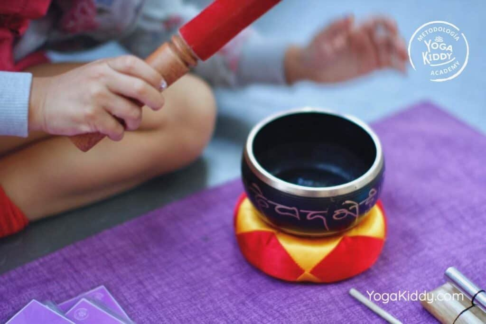

El yoga infantil debe estar constantemente nutriéndose de nuevos recursos para así ofrecer una experiencia integral y atractiva para niños y niñas.
En anteriores artículos hemos propuesto ideas de cómo poder integrar el reciclaje, la plástica y los cuentos para enriquecer nuestras prácticas y las posibilidades de aprendizaje tanto para la infancia como para nosotros/as en nuestro rol de facilitadores.
Esta vez, será el turno de la música, visualizada como un recurso de acompañamiento a nuestras clases de yoga infantil.
Las canciones resultan muy atractivas para la infancia, ya que mediante ellas pueden expresarse libremente, adquirir aprendizajes de manera lúdica y por sobre todo, una posibilidad de pasarlo muy bien. La música crea ambientes acogedores, positivos y estimulantes para todos y todas, siendo capaz de dar paso a un aprendizaje transversal desde el juego , para la interiorización de conceptos, valores, actitudes, etc.
En nuestras clases de yoga infantil, la música puede alcanzar todo este valor cuando nuestra mirada va más allá de la mera reproducción musical, y la estimamos como una herramienta lúdica para el logro de diversos objetivos en la unidad como seres, respondiendo a lo físico, mental, emocional y espiritual.
La música que quieras utilizar para la ejecución de tus clases, debe tener ciertas características, para así poder responder a nuestra labor como facilitadores de yoga. Las letras asertivas y respetuosas con la infancia, es un aspecto fundamental que debemos revisar previamente y de forma detallada para obtener coherencia con nuestro mensaje a entregar. El contenido de las canciones, es información que debemos procurar cuidar, ya que se convierten en mantras que se repiten una y otra vez, plasmando una información en cada niño y niña.
¿Qué soñamos para nuestra infancia? , ¿Qué mensajes queremos entregarles?, ¿Qué información anhelamos alojar en sus sistemas nerviosos?, ¿Qué mundo deseamos para ellos y ellas?
Aquí te compartimos música para hacer de nuestra infancia, una etapa más cuidada, más nutrida y por sobre todo más amada:
Las puedes utilizar para el momento de la relajación y así ofrecer un viaje guiado desde la música.
Aquí te encontrarás con animales para el trabajo de asanas, complementado con el aprendizaje de vocales.
Para el abordaje de posturas corporales y memoria.
Para conciencia corporal y espacial.
Para el trabajo de mudras.
Peggysue.S.S